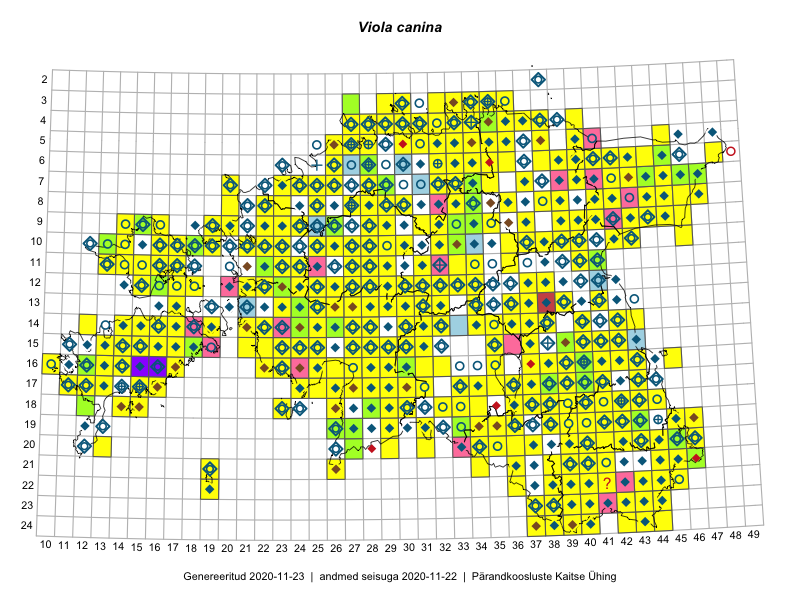

Viola canina
Uuendatud: 2016-12-08
Kaardile koondatud taksonid: Viola canina L.

Kaart põhineb 21 kirjel, neist vaatlusi 18 ja eksemplare 3. Taksonit on leitud 20 ruudust.
| Ruut | Vaatleja(d) | Vaatlusaeg | Kirje tüüp | Viide andmebaasikirjele |
|---|---|---|---|---|
| 16-25 | Indrek Tammekänd | 2015-09-18 | ruut/ala | vaata PlutoFis |
| 15-23 | Indrek Tammekänd | 2015-04-06 | ruut/ala | vaata PlutoFis |
| 15-24 | Indrek Tammekänd, Liisa Rennel, Agu Leivits, Hannes Pehlak, Irja Tammekänd | 2015-04-27 | ruut/ala | vaata PlutoFis |
| 13-25 | Indrek Tammekänd, Katrin Aavik | 2015-06-15 | ruut/ala | vaata PlutoFis |
| 16-22 | Indrek Tammekänd, Jaak Tammekänd, Raivo Endrekson | 2015-06-01 | ruut/ala | vaata PlutoFis |
| 14-22 | Indrek Tammekänd | 2015-05-31 | ruut/ala | vaata PlutoFis |
| 15-22 | Indrek Tammekänd, Jana Galadi | 2015-06-03 | ruut/ala | vaata PlutoFis |
| 15-22 | Vilma Kuusk, Indrek Tammekänd | 2015-06-30 | ruut/ala | vaata PlutoFis |
| 16-26 | Indrek Tammekänd | 2015-05-11 | ruut/ala | vaata PlutoFis |
| 06-45 | Timo Luhamäe, Eerik Leibak | 2015-05-31 | punkt | vaata PlutoFis |
| 10-18 | Meeli Mesipuu, Timo Luhamäe | 2015-05-26 | punkt | vaata PlutoFis |
| 16-30 | Indrek Tammekänd | 2016-06-08 | ruut/ala | vaata PlutoFis |
| 16-27 | Indrek Tammekänd | 2016-06-01 | ruut/ala | vaata PlutoFis |
| 17-24 | Indrek Tammekänd | 2016-05-23 | ruut/ala | vaata PlutoFis |
| 19-36 | Sander Laherand | 2016-09-20 | punkt | vaata PlutoFis |
| 17-38 | Meeli Mesipuu | 2016-10-15 | punkt | vaata PlutoFis |
| 12-27 | Ranno Puumets | 2016-05-01 | ruut/ala | vaata PlutoFis |
| 24-37 | Meeli Mesipuu, Thea Kull | 2013-06-27 | punkt | vaata PlutoFis |
| 19-29 | Peedu Saar, Liina Oja | 2015-05-22 | eksemplar | vaata PlutoFis |
| 07-47 | Peedu Saar, S. Laherand | 2015-05-31 | eksemplar | vaata PlutoFis |
| 10-13 | Thea Kull | 2015-06-14 | eksemplar | vaata PlutoFis |